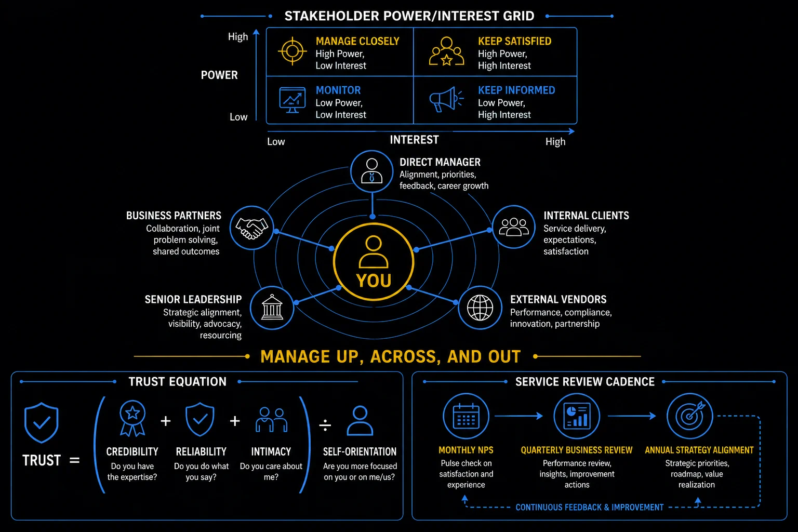

Pillar 4 · Cluster 2
Stakeholder relationships in a matrix organization
GBS professionals report into local management, functional leadership, and project structures simultaneously. Managing those relationships — especially the difficult ones — is a career-defining skill.
Sound familiar?
Topic 01 · Matrix Operations
Managing conflict in a matrix organization
Matrix structures create ambiguity by design — two managers, different priorities, both legitimate. Navigation beats frustration. The model is in THE FIX.
Two managers. Two priorities.
Both are right.
Amara’s functional manager wants the backlog cleared. Her site manager wants overtime frozen.
Same week. Opposite instructions. Both legitimate.
She quietly tries to satisfy both — and satisfies neither.
"Am I supposed to choose between my bosses?"
She feels cornered by a structure, not a person.
You absorb the conflict silently instead of surfacing it to the people who own it.
Matrix conflict is their conflict — your job is to make it visible, not to secretly resolve it.
One short email to both managers. They align in a day — and she stops paying for a conflict she never owned.
Matrix conflict in depth
Matrix structures create ambiguity by design. Two managers with different priorities, both claiming your time. The skill is not avoiding conflict — it is navigating it transparently.
Conflict in a matrix is structural, not a failure of the matrix.
- Matrix organizations exist because GBS serves multiple functions, geographies, and business units simultaneously.
- A finance analyst in a GBS center might report to a local team lead, a global process owner in another country, and a project manager running an ERP migration.
- Each stakeholder has different priorities, different metrics, and different expectations.
- Make the conflict visible — do not try to satisfy conflicting priorities silently; surface the trade-off to both stakeholders
- Escalate early, not late — waiting until both deadlines are missed helps nobody; flag the conflict while options remain
- Propose a solution, not just the problem — come to the escalation with a recommended prioritization and reasoning
- Document agreements — when priorities are resolved, confirm in writing who gets what by when
- Separate the person from the role — stakeholders are not being difficult; they are representing legitimate business needs that happen to conflict
Stakeholder mapping — power vs interest
Next colliding instruction: name it to both owners in one message. Ask them to pick.
Conflict surfaced upward. Managing up is the everyday version.

Stakeholder relationship management: manage up, across, and out
Topic 02 · Upward Management
Managing up — strategies for working with leadership
Managing up means making it easy for your leadership to support you — briefings before surprises, options before problems. The model is in THE FIX.
Your manager is not a mind reader.
Stop testing the theory.
 R
RRavi spots a risk on Tuesday. He plans to mention it — when it becomes real.
It becomes real Friday, in a stakeholder call, in front of his manager.
The look he gets afterward teaches him more than the escalation.
"If I had known Tuesday, I could have protected us both."
He feels exposed — avoidably.
You protect your manager from bad news and deliver them a surprise instead.
Managing up runs on three habits.
His Tuesday heads-up becomes routine. His manager starts defending his work in rooms he never sees.
Managing up in depth
Your manager does not have time to figure out what you need. Managing up means making it easy for your leadership to support you, recognize your work, and remove your blockers.
- Understand their priorities — your manager is measured on specific outcomes; align your updates to show how your work contributes to those outcomes
- Adapt to their communication style — some managers want detailed updates, others want bullet-point summaries; ask directly and adjust
- Bring solutions, not problems — when you escalate, include your recommendation and what you have already tried
- Manage their calendar, not yours — request time for important discussions well in advance; urgent requests erode trust
- Make your work visible — structured updates at consistent intervals prevent the "I did not know you were working on that" problem
- Managing up is not political maneuvering. It is professional communication that makes your manager's job easier and your contributions visible.
- The biggest career mistake in GBS is doing excellent work that nobody knows about. Visibility is not vanity — it is professional responsibility.
Trust cycle — credibility, reliability, intimacy
Send one early heads-up this week: risk, impact, your suggested path. Three lines maximum.
Your manager is the easy one. Some stakeholders push back on everything.
Topic 03 · Stakeholder Challenges
Managing difficult stakeholders and pushback
Some stakeholders resist by default. The pattern: understand the resistance, separate person from position, build the smallest yes. The model is in THE FIX.
Every proposal, the same wall.
The wall has reasons.
Peter’s toughest stakeholder rejects the new intake process. Third rejection this quarter.
In frustration Peter asks one different question: "What would this break for your team?"
The answer is specific: a month-end dependency Peter never knew existed.
"He was not blocking me. He was protecting something I could not see."
He feels humbled — usefully.
You fight the stakeholder's resistance without asking why they resist. Often, the pushback protects something real — a risk, a commitment, a team — and understanding it changes the conversation.
Resistance is information. Work it in three moves.
The redesigned pilot works around month-end. The stakeholder approves it — and becomes its loudest advocate by Q3.
Difficult stakeholders in depth
Not every stakeholder will be collaborative. Some will resist change, challenge your authority, or escalate around you. How you handle pushback defines your professional reputation.
- "We have always done it this way" — acknowledge the history, present data on why the new approach is better, and pilot rather than mandate
- "This is not your decision to make" — clarify your role and authority, then offer to collaborate rather than direct
- "I need this escalated to your manager" — stay calm, document the interaction, brief your manager proactively before the escalation lands
- "Your team does not understand our business" — invite them to a knowledge-sharing session; curiosity disarms defensiveness
- "The SLA does not matter if the output is wrong" — agree on quality first, then reframe SLA as the delivery commitment for quality output
Ask your hardest stakeholder: "What would this change break for you?" Write the answer down.
Some pushback is theirs to give — and some no’s are yours.
Topic 04 · Professional Boundaries
The art of saying "No" diplomatically
Saying yes to everything means delivering nothing well. A good no redirects: options, trade-offs, the decision returned to the asker. The model is in THE FIX.
Every yes has a price.
Name it before you pay it.
A stakeholder needs a custom report by Friday. Amara’s week is already committed.
Old habit: say yes, work the weekend, resent it.
New habit: "I can do Friday if the monthly reconciliation moves to Tuesday — or full report next Wednesday. Which works?"
"You choose — both are real options."
She feels steady. The stakeholder picks Wednesday without friction.
Saying yes without naming the trade-off hides the cost. Your manager does not see it, the requester does not see it, and when something else slips, only you know why.
The diplomatic no is really Option A or Option B.
Requests stop being ambushes. Her yes starts meaning something — because it visibly costs something.
Saying no diplomatically in depth
In GBS, saying yes to everything means delivering nothing well. Saying no effectively means redirecting, not refusing.
- The redirect — "I cannot do X by Friday, but I can deliver Y by Friday or X by next Wednesday. Which works better for you?"
- The trade-off — "I can take this on, but it means deprioritizing [specific deliverable]. Do you want to discuss with [stakeholder] first?"
- The process — "This request needs to go through [intake process] so we can scope and schedule it properly. I will help you submit it."
- The referral — "This sits outside my team's scope, but [team/person] handles this. Let me connect you."
- The data — "Based on current capacity, we can start this in week 3. Here is our queue. Would you like to discuss reprioritization?"
Every unplanned "yes" displaces planned work.
- GBS teams that accept every ad-hoc request without pushback train stakeholders to bypass the intake process
- Unchecked ad-hoc demand overloads the team — and stakeholders blame the team when SLAs slip
- Saying no is not unhelpful — it is protecting the quality of everything you already committed to
Answer your next overload request with two real options. Let them choose.
Options are the opening move. Cluster 3: the full negotiation toolkit.
Reference
Glossary
Full glossary at the GBS Insider Club Field Guide.
- McKinsey — Making matrix organizations work, 2024
- Harvard Business Review — Managing Up Without Sucking Up, 2023
- SSON Analytics — GBS stakeholder satisfaction survey, 2025
- Galbraith, Jay R. — Designing Matrix Organizations That Actually Work, Jossey-Bass, 2009
Knowing the frameworks is the entry ticket. Applying them — visibly, at your actual job — is what gets you promoted.
The GBS Insider Club Career Playbooks turn this theory into a guided 90-day program for your role: self-assessment, practical exercises, templates, and Julian's unfiltered practitioner playbook.
Explore the Career Playbooks → Back to Stakeholder Communication